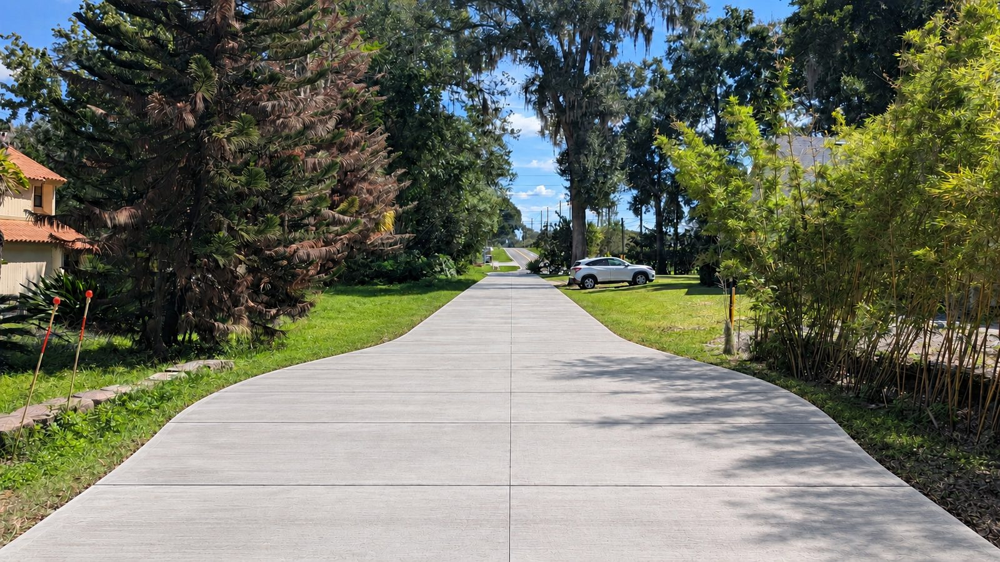
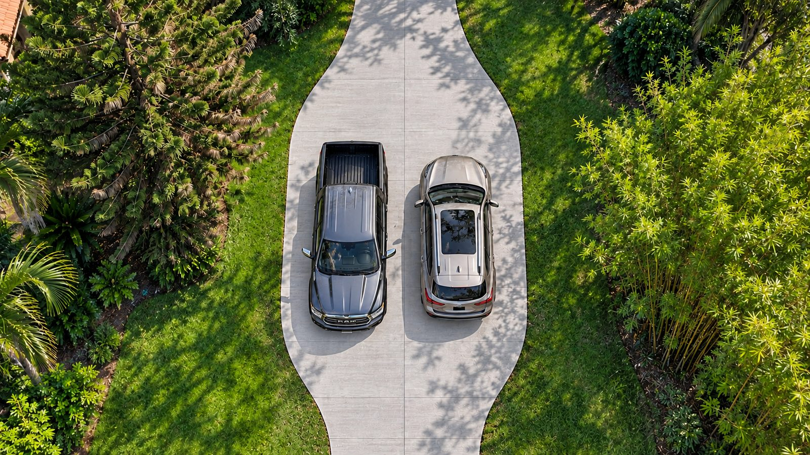
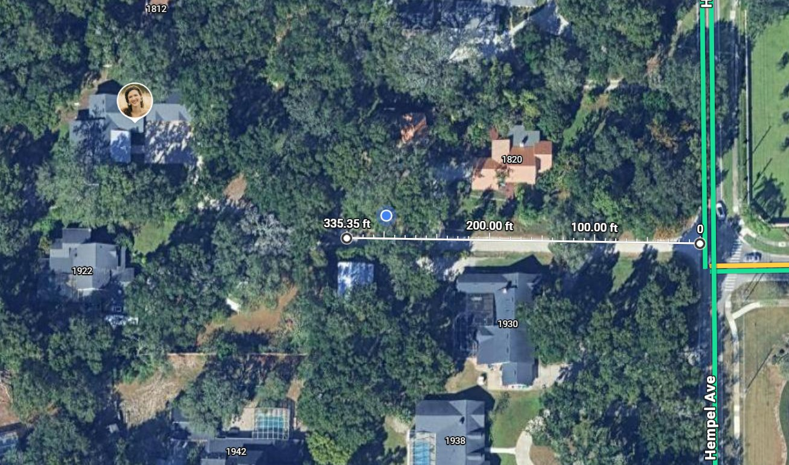

Street entrance
Where the road meets the street. A clean concrete apron instead of loose sand spilling onto the pavement.
Tip: drag anywhere on a photo, or tab to it and use the arrow keys.
Our shared dirt road washes out, ruts up, and tracks sand into every car and garage. Here is what it could look like as a poured concrete driveway. Drag the slider on each photo to compare today with the finished version.
No quotes yet. The costs on this page are rough estimates to help us decide whether to do this. If everyone is interested, we'll get three quotes from concrete contractors.
The first stretch of the shared road, as you turn in from the street.
Where the road meets the street. A clean concrete apron instead of loose sand spilling onto the pavement.
Tip: drag anywhere on a photo, or tab to it and use the arrow keys.
The straight run through the trees, paved edge to edge.
The concrete runs right up to 1930's existing driveway, with no strip of loose sand between the two.
The concrete meets the pavers at the start of 1820's driveway, one continuous surface through the turn.
The end of the shared road, where 1922 and 1830 go their separate ways.
The entire shared road as seen from 1830 and 1922, looking back toward Hempel Ave.
A stretch where the road widens, with room for two cars side by side.

Looking toward Hempel Ave, the road widens on both sides and then narrows back to the regular lane.

The same idea from above, with a pickup and an SUV side by side.
The shared road is two 15 ft strips side by side. 1830 owns the north strip and 1922 owns the south strip. 1820 and 1930 each have a recorded easement to drive over the first 200 ft from Hempel Ave, across the full 30 ft. Edward J. Barrett, who owned all four lots, set this up when he divided the land between 1980 and 1983.
Part of 1830's lot: 15 ft wide, running 404 ft west from Hempel Ave between 1820's lot and 1922's strip.
…thence S 88° 33' 44" E 335.08 feet to the West Right-of-Way line of Hemple Avenue, thence S 00° 22' W, along said Right-of-Way line, 15.0 feet, thence N 88° 33' 44" W 404.20 feet, thence N 00° 22' E 15.0 feet…
Warranty deed from Edward J. Barrett. Signed Dec. 7, 1983, recorded Dec. 16, 1983. Official Records Book 3452, Page 1924 (Doc. 2048843).
View the recorded deed (PDF)Part of 1922's lot: 15 ft wide, running 335 ft west from Hempel Ave between 1830's strip and 1930's lot, where it opens into the rest of 1922's land.
…thence S 00° 22' W 15.0 feet, thence S 88° 33' 44" E 404.20 feet to the West Right-of-Way line of Hemple Avenue, thence S 00° 22' W, along said Right-of-Way line, 15.0 feet, thence N 88° 33' 44" W 335.08 feet…
Warranty deed from Edward J. Barrett. Signed Dec. 7, 1983, recorded Dec. 16, 1983. Official Records Book 3452, Page 1935 (Doc. 2048848).
View the recorded deed (PDF)The right to come and go over the full 30 ft width for the first 200 ft from Hempel Ave. This grant measures it from 1820's side: the 30 ft directly south of 1820's lot.
…is granted an easement for ingress and egress over the following described property: … thence S 88°33'44" E 335.08' to the West Right-of-Way line of Hemple Avenue for a POB, thence S 00°22'00" W 30 ft. along said Right-of-Way line, thence N 88°33'44" W 200', thence N 00°22'00" E 30 feet thence S 88°33'44" E 200 ft to POB. Grantee agrees to improve and maintain the easement area for the purpose of providing a common driveway for Parcels 4, 5, 6 and 7.
Quit-claim deed from Edward J. Barrett. Signed Apr. 3, 1981, recorded Apr. 16, 1981. Official Records Book 3186, Page 1932 (Doc. 1639726).
View the recorded easement (PDF)The same 30 × 200 ft area, granted the same day. This grant measures it from 1930's side: the 30 ft directly north of 1930's lot.
…an easement for ingress and egress over the following described property: … thence S 88°33'44" E 335.08 feet to the West Right-of-Way line of Hemple Avenue for a POB, thence N 00°22'00" E 30' along said Right-of-Way line, thence N 88°33'44" W 200 ft, thence S 00°22'00" W 30 ft. thence S 88°33'44" E 200 ft to the POB. Grantee agrees to improve and maintain the easement area for the purpose of providing a common driveway for parcels 4, 5, 6, and 7.
Quit-claim deed from Edward J. Barrett. Signed Apr. 3, 1981, recorded Apr. 16, 1981. Official Records Book 3186, Page 1933 (Doc. 1639727).
View the recorded easement (PDF)Upkeep. Both 1981 easements end with the same promise from the owner of 1820 or 1930 at the time: "Grantee agrees to improve and maintain the easement area for the purpose of providing a common driveway for parcels 4, 5, 6, and 7." The documents don't say which lots parcels 4 to 7 are.
A plain-language summary of public records, not legal advice. The PDFs are copies of the recorded documents from the Orange County Comptroller's Official Records.
Contractors we've talked to so far. None has quoted the shared road yet. If everyone is interested, we'll ask each for a quote on the same job: the full 335 ft shared road, about 4,200 sq ft of 4 in. fiber-reinforced concrete. Their quotes will then replace the rough estimate in the cost split below.
Tim McCreless
No quote yet
Blake
No quote yet
Peter and S. Williams
No quote yet
The first 200 ft from Hempel Ave is the 1981 easement, described as a common driveway for four parcels (see Who owns the road). All four households split those 200 ft evenly, and 1830 and 1922 split the remaining 135 ft to the end at 335 ft. Each household's share is the sum of its stretches.

These are rough estimates, not quotes. Real prices will come from three contractor quotes if everyone is interested. $11 per sq ft is the middle of the $10 to $13 Orlando range for 4 inch, fiber reinforced, broom finish concrete. Fixed costs cover things that are paid once per job: mobilization, permit, equipment and a pump truck if needed.
Shared road: 335 ft long by about 12 ft wide, plus the apron at Hempel.
The whole cost, fixed costs included, is split by the stretches listed under the table. Distances are scaled from the recorded survey of 1830 Hempel and match a Google Maps measurement within a few inches.
| Household | Share | Cost |
|---|
A starting framework for a shared driveway maintenance agreement. Recorded with Orange County, it stays with each house if it sells, so the next owner is bound by the same terms.
Repairs are split the same way as the pour. All four share the 200 ft easement, and 1830 and 1922 share the rest.
Each household maintains its own driveway past the point where it leaves the shared road.
Sweeping, edging and trimming overhanging branches. Each household handles what borders its own lot, with no cost sharing.
If a household's dumpster, moving truck or contractor cracks a slab, that household pays for the repair.
Repairs under an agreed amount, such as $1,000, can go ahead. Larger ones need approval from households holding more than half the shares. Emergency fixes can be made right away.
One neighbor coordinates quotes and invoices. Everyone pays their share within 30 days. An optional reserve of $100 to $200 per household a year avoids collecting each time.
The live oaks along the road will eventually lift slabs. We should agree now whether root damage is shared or falls on the tree's owner, and ask bidders about root barriers.
The section in the county right of way needs a county permit and is maintained by the owners, not the county. It's at the start of the easement, so all four share it.
Try mediation before anything else.
This is a framework to discuss, not legal advice. The 1981 easements for 1820 and 1930 already include upkeep terms for the first 200 ft (see Who owns the road), and this split builds on them.
Confirm all four households are interested in paving the shared road.
Get at least three concrete contractor bids for the same scope and thickness.
Agree on the percentages and the maintenance terms, and record both in one agreement.
Pick a contractor and a date, and plan parking and access for the cure period.